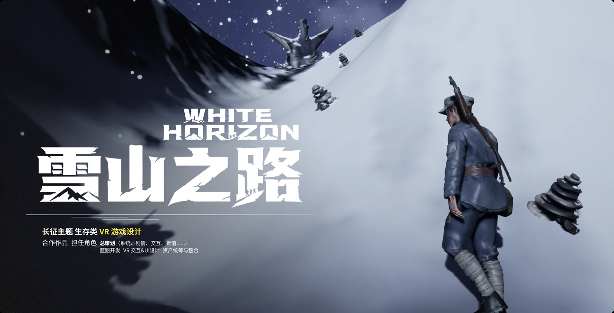
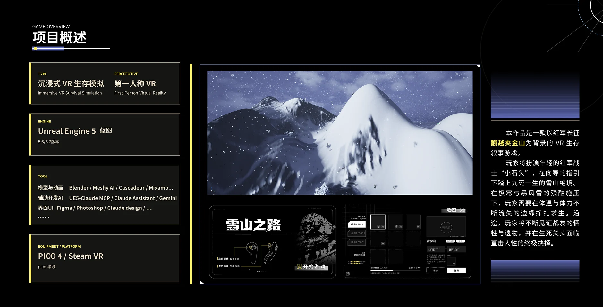
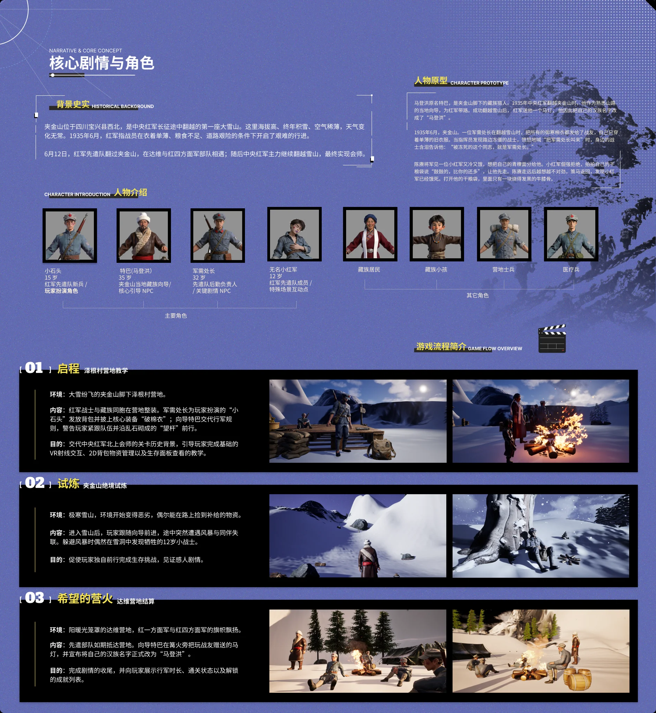
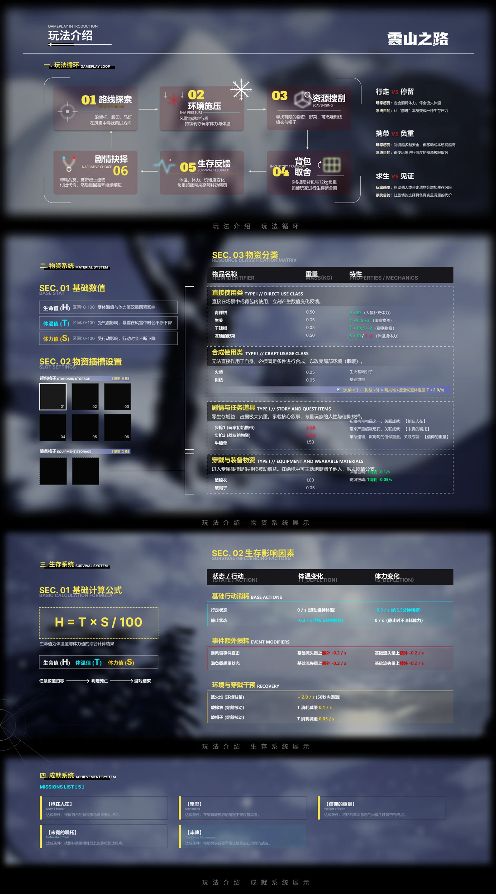
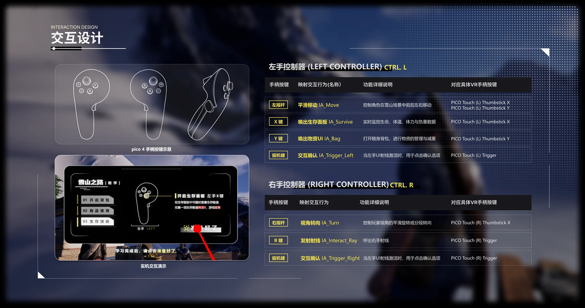
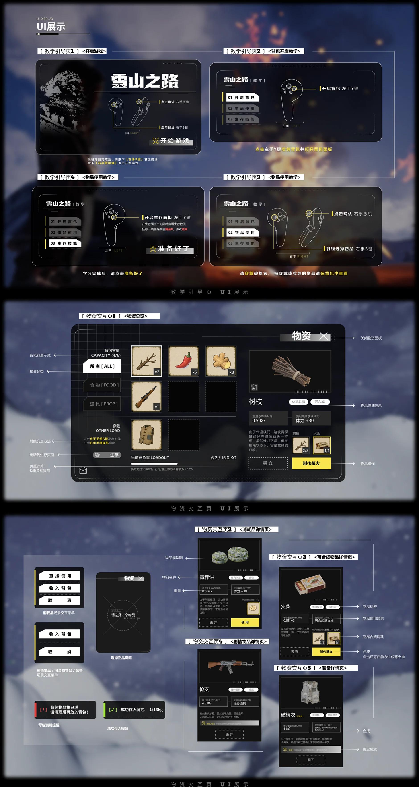
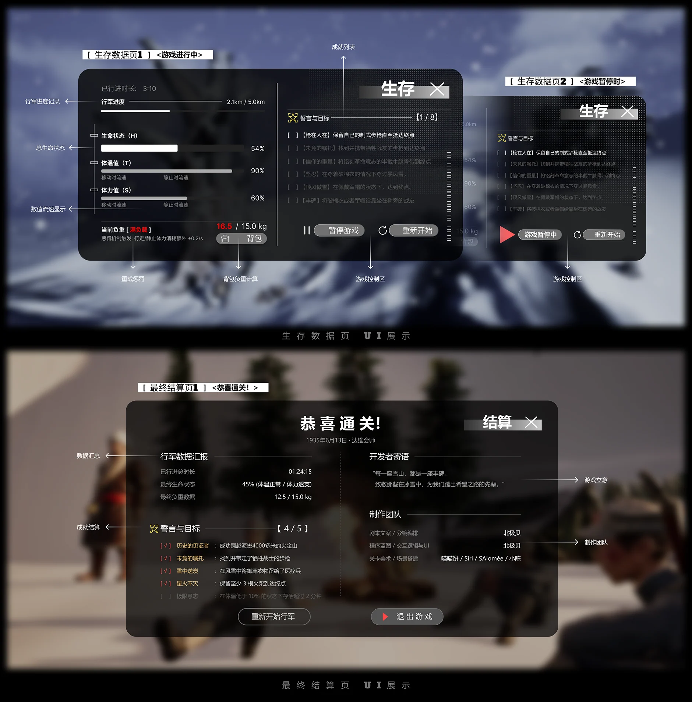
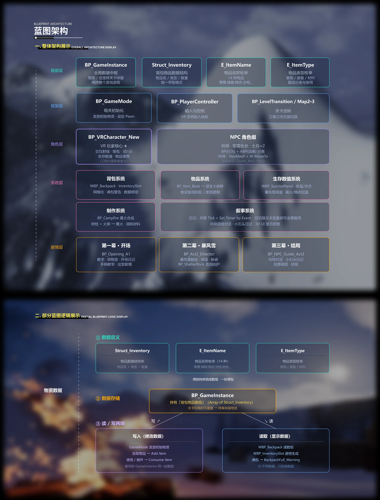

Act 01
启程：泽根村营地教学
大雪纷飞的夹金山脚下，玩家以“小石头”的身份完成整装，学习基础交互、背包管理与生存面板查看。









Gameplay Showcase
大雪纷飞的夹金山脚下，玩家以“小石头”的身份完成整装，学习基础交互、背包管理与生存面板查看。
进入雪山后，环境逐渐恶劣，玩家需要独自前行、寻找补给，并在风暴与失联中推进生存挑战。
阳光笼罩的达维营地中，红一方面军与红四方面军旗帜飘扬，玩家迎来剧情收尾与通关反馈。
展示当前原型中的核心系统雏形，包括物资管理、生存状态、补给收集、界面反馈与基础循环。